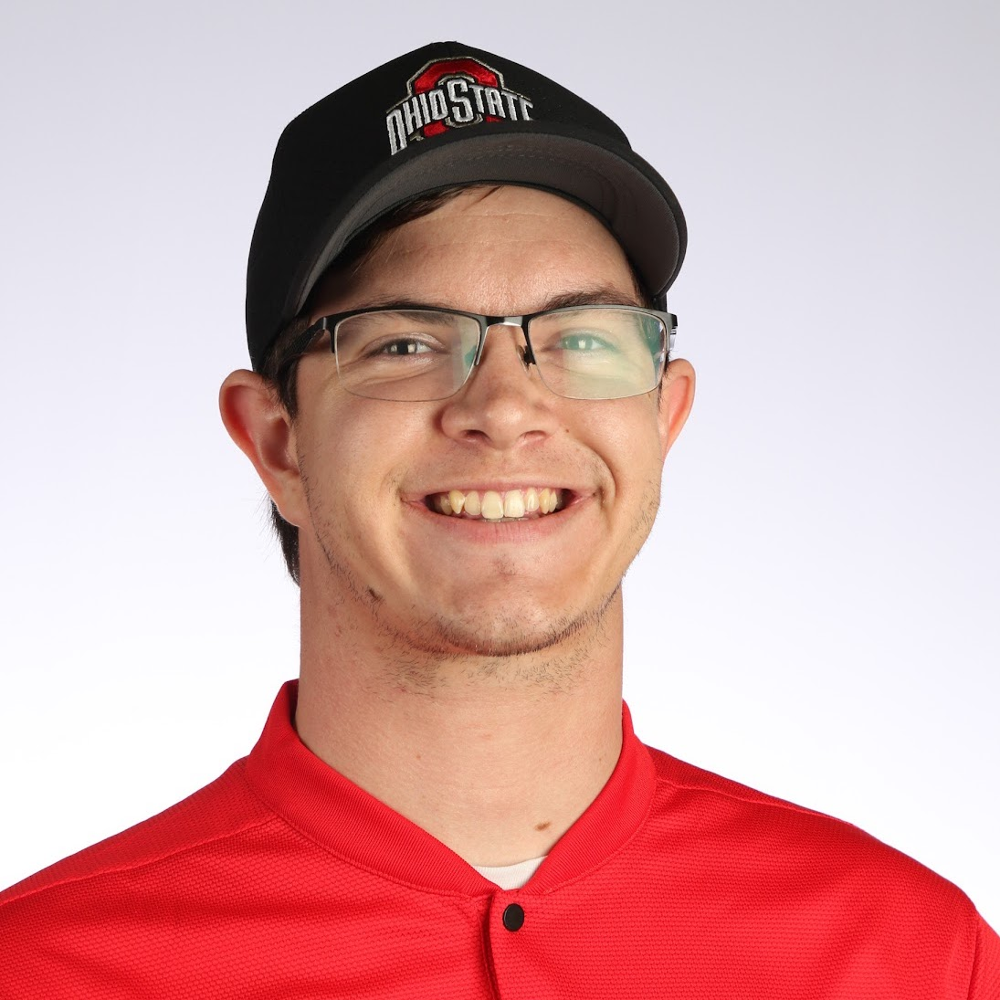

Patrick J. Vallely
About Me
I grew up in Boulder City, a small town in southern Nevada known primarily for its proximity to the Hoover Dam and its brief role in the film La La Land. As a kid I cycled through a number of big dreams – at various points convinced that I was going to be a NASCAR engineer, medical doctor, and submariner – before I finally settled on pursuing astrophysics. After graduating from Boulder City High School in 2013 (and giving what I believe to be the greatest salutatorian speech of all-time), I headed off to the University of Oklahoma to do just that.
The academic side of college was great, but I got so much more out of my time in Norman than just a solid grasp of physics and an introduction to Python. While at OU, I made lifelong friends, fell in love with my future wife, and got introduced to the crazy world of college football fandom. I may not have had season tickets during my freshman year, but by the time I graduated I'd been to thirty three games and traveled almost nine thousand miles to watch the Sooners play. I even made it onto ESPN a couple times:
Given how much I'd enjoyed my undergraduate research opportunities, as my time in Norman drew to a close I decided to continue on in academia and pursue a Ph.D., a decision which ultimately led me to TheTM Ohio State University. Now, OSU has one of the best astronomy graduate programs in the country, don't get me wrong, but I'd be lying if I said I wasn't almost as excited about getting to root for another college football blueblood as I was the research opportunities. Ultimately though, unlike certain other well-known Buckeyes, I did come to Columbus to play school, and despite the COVID-19 pandemic throwing a wrench in some of my best-laid research plans, I was able to finish my dissertation ahead of schedule and graduate within five years.
Largely by accident, I also discovered my passion for photography while in graduate school. I've always been interested in nature and ecology – in fact I once got drunk at a party and ordered a cheetah textbook (that I subsequently read cover-to-cover) – so one of my favorite things to do when I had downtime was to visit the Columbus Zoo. Annual membership in hand, it didn't take long for me to get frustrated with the limitations of my iPhone camera as I tried to capture fleeting moments of interesting behavior. Eventually I decided to take the plunge and bought an entry-level Nikon camera with a cheap telephoto lens. What started with portraits of zoo residents quickly grew into a much more significant endeavor, complete with investments in pricier equipment and a number of wildlife-focused national park adventures.


I didn't stop at wildlife, though. In early 2021 I took my camera down to Bristol on a whim, figuring it might be fun to try shooting race cars as NASCAR tried running a dirt race for the first time in fifty years. While I was shooting from the grandstands as a fan that day (and naively using the fully automatic settings), I have since been a credentialed photographer for Pit Box Press at more than a dozen NASCAR races and have filled in as a team photographer on several occasions. I have no interest in pursuing motorsports photography beyond a small part-time gig, but it's been a blast returning to my childhood race fan roots. Certainly makes for some incredible corporate icebreaker content, too.

After all, how many people can say that they've been on NPR to talk about star-shredding black holes and got to cover a nationally televised championship event as credentialed media?